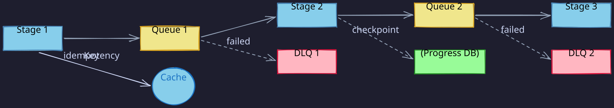
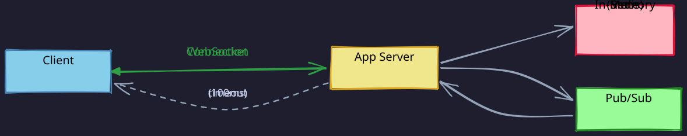
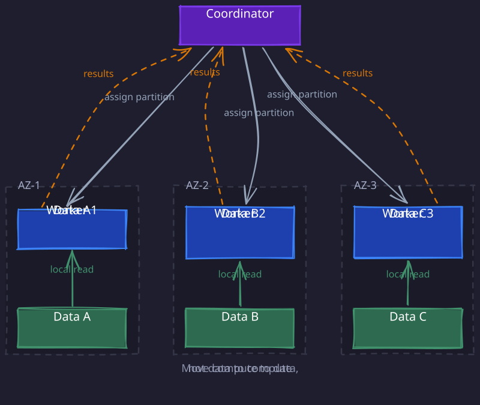
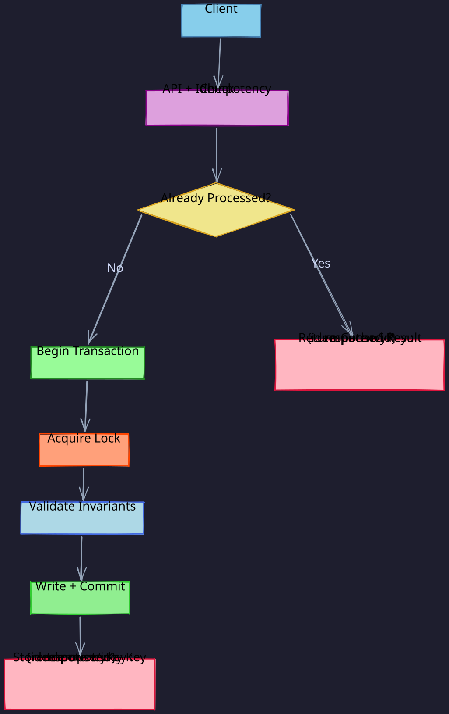
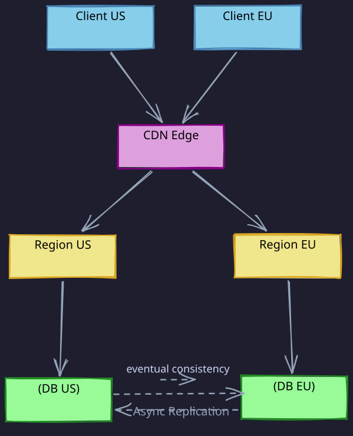
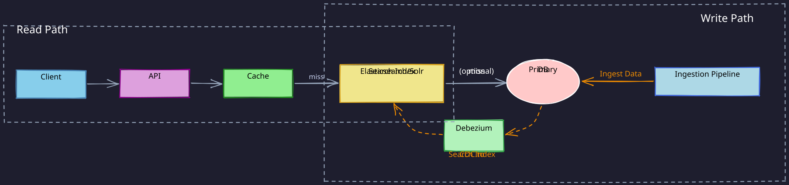
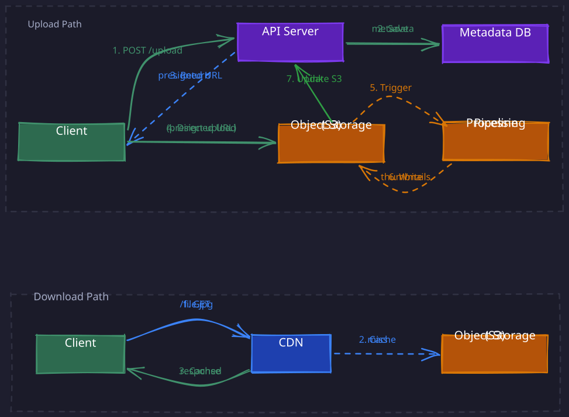
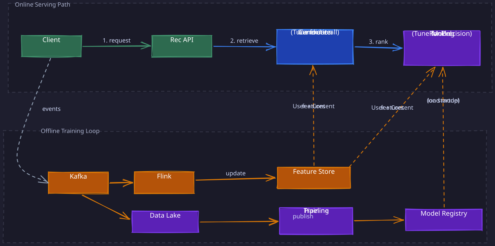
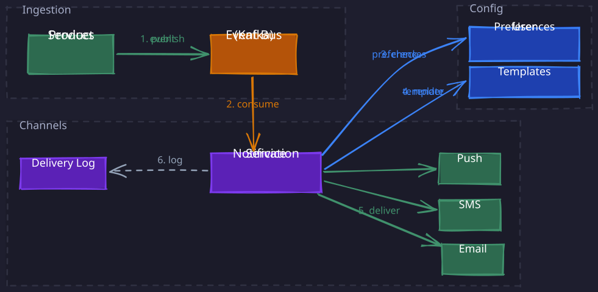

A comprehensive guide to recognizing and solving system design problems. Each pattern includes trigger words, architectural approach, implementation ladder, and interview talking points.
1. Read-Heavy Systems
Trigger words: “feed”, “timeline”, “search”, “dashboard”, “browse”, “list”
Goal: The problem is that most requests are reads (90%+ read ratio) hitting the database, causing high latency and database overload.
- The goal is to minimize read latency by reducing the work the database has to do per request, primarily through caching, replication, and precomputation strategies.
Mental model: “Don’t make DB do work”
Go-to stack:
Ladder:
- Index - Add database indexes on query columns (WHERE, JOIN, ORDER BY). First and cheapest optimization.
- Cache - Add Redis/Memcached layer with FISH pattern (Fallback, Invalidation, Stampede prevention, Hot keys). Use write-through or TTL-based expiry. Target 80-90% hit rate.
- CDN - Use CDN for cases where the data is updated less frequently, for example once a day or at the time of application deployment etc.
- Read Replicas - Add async replicas for read traffic. Route user reads to replicas, own writes to primary. Monitor replication lag (<1s). Scale reads horizontally.
- Denormalize - Avoid expensive JOINs by duplicating data across tables. Store feed/timeline data pre-sorted and ready to serve. Trade storage in favour of read speed.
- Precompute - Calculate expensive results during writes instead of reads. Store computed values (eg. counts, aggregates in Pinot) directly. Use materialized views or background jobs.
- Shard - Partition data across multiple databases by user_id, tenant_id, or geography. Last resort due to complexity. Use consistent hashing for even distribution.
Staff hooks (bring up if relevant):
- Clarify: p95/p99 latency target, freshness/staleness tolerance, read/write ratio, personalization needs (e.g., feed fanout-on-write vs fanout-on-read)
- Measure: cache hit rate + tail latency, DB QPS/CPU, replica lag, hot key/top query distribution
- Rollout: add caches incrementally (feature flag), protect DB with fallback + stampede protection, validate with load tests and shadow reads
Red flag: Jumping to sharding before trying cache + replicas
Interview sentence:
“This is read-heavy, so I’m optimizing for latency. I’d start with indexes and 01-01-Redis caching, add read replicas at 10K QPS, and only shard after exhausting those options.”
2. Write-Heavy Systems
Trigger words: “logging”, “metrics”, “events”, “tracking”, “orders”, “analytics ingestion”
Goal: The problem is high volume of incoming writes that risk overwhelming the database or losing data during spikes.
- The goal is to ensure durability (never lose data) by accepting writes quickly and deferring expensive processing, using append-only patterns and asynchronous workflows to handle bursts.
Mental model: “Accept fast, process later”
Go-to stack:
Ladder:
- Append-only - Never UPDATE or DELETE, only INSERT. Immutable event log pattern. Eliminates lock contention on updates. Query latest state with GROUP BY or time-based filters.
- WAL (Write-Ahead Log) - Persist writes to sequential log before processing. Fsync to disk for durability. Enables fast crash recovery. Similar to database commit logs or Kafka’s design.
- Batch writes - Group multiple writes into single DB transaction. Reduce network round trips and fsync overhead. Batch 100-1000 writes every 100-500ms. Balance latency vs throughput.
- Queue for buffering - Use Kafka/SQS to absorb write spikes. Decouple ingestion from processing. Provides backpressure and prevents overwhelming downstream. Monitor queue depth.
- Async processing - Process writes in background workers instead of request path. Return
202 Acceptedimmediately. Use worker pools for parallelism. Retry on failure. - Shard by write key - Partition writes across multiple databases by entity ID or time range. Each shard handles subset of writes. Use range or hash-based partitioning.
Staff hooks (bring up if relevant):
- Clarify: acceptable data loss (RPO), max ingestion latency, peak vs avg QPS, ordering requirements
- Measure: ingress success rate, queue depth/backlog, end-to-end write latency, dropped events, retry rate
- Rollout: enforce backpressure + load shedding, make writes idempotent (dedupe keys), validate with spike tests and capacity headroom
Red flag: Doing validation/joins/aggregation in write path
Interview sentence:
“This is write-heavy, so I’m optimizing for durability. I’d use append-only writes to a WAL, buffer in 01-Kafka, and process async to ensure we never lose data even under load spikes.”
3. Async Pipelines
Trigger words: “bulk”, “ETL”, “batch”, “processing”, “workflow”, “campaign”
Goal: The problem is processing large volumes of data through multiple stages where failures and retries are common.
- The goal is to maximize throughput while ensuring fault tolerance, using queues to decouple stages, idempotency to handle retries safely, and checkpointing to recover from failures without reprocessing everything.
Mental model: “Stages + retries + idempotency”
Go-to stack:

Ladder:
- Queue between stages - Decouple pipeline stages with Kafka/SQS. Each stage consumes from input queue, produces to output queue. Enables independent scaling and failure isolation.
- Idempotency keys - Generate unique ID per work item (request_id, message_id). Store processed IDs in database/cache. Skip duplicate processing. Critical for retries and exactly-once semantics.
- Checkpointing - Save progress periodically (every N records or M seconds). Store offset/cursor in durable storage. Resume from checkpoint on failure instead of restarting entire pipeline.
- Worker pools - Run multiple parallel workers per stage. Each worker processes subset of data. Scale workers based on queue depth. Use consumer groups for load distribution.
- DLQ + exponential backoff - Route failed messages to Dead Letter Queue after N retries (typically 3-5). Use exponential backoff (1s, 2s, 4s, 8s) with jitter. Monitor DLQ and alert.
Staff hooks (bring up if relevant):
- Clarify: retry policy + max delay, ordering constraints (per key vs global), replay/backfill needs, schema evolution expectations
- Measure: consumer lag, processing time distribution, DLQ rate, retry rate, throughput per stage
- Rollout: canary new consumers, version schemas, keep reprocessing safe via idempotency + checkpoints
Red flag: Processing stages tightly coupled without queues
Interview sentence:
“This is an async pipeline, so I’m optimizing for throughput and fault tolerance. I’d use Kafka between stages, make everything idempotent, checkpoint progress, and route failures to DLQ.”
4. Real-Time Systems
Trigger words: “chat”, “live”, “streaming”, “multiplayer”, “trading”, “bidding”
Goal: The problem is users expect consistent, bounded response times where latency spikes are unacceptable (e.g., a chat message taking 5 seconds sometimes).
- The goal is predictable latency with minimal jitter by keeping state in-memory, setting aggressive timeouts, and failing fast rather than queuing requests that would degrade user experience.
Mental model: “In-memory + fail fast”
Go-to stack:

Ladder:
- In-memory state - Keep active session state (sessions, presence, subscriptions, game state) in Redis or server memory. Avoid disk I/O on hot path. Use TTL for automatic cleanup. Replicate state for failover if needed.
- WebSockets/persistent connections - Maintain long-lived bidirectional connections. Avoid HTTP handshake overhead per message. Enable server push. Handle connection lifecycle (heartbeat, reconnect).
- Aggressive timeouts - Set tight timeouts (50-100ms) on all operations. Fail fast instead of queuing. Return error immediately rather than degrading latency. Prevents cascading delays.
- Load shedding - Reject new requests when system saturated. Return 503 immediately rather than queuing. Protect system stability over accepting all traffic. Monitor rejection rate.
- Pre-allocation - Allocate buffers/objects at startup, not per request. Avoid garbage collection pauses during hot path. Use object pools. Critical for languages with GC (Java, Go).
- Pub-Sub architecture - To broadcast real-time events across app servers when users are connected to different machines. One server publishes an event; all subscribed servers receive it and push to their local WebSocket clients. Enables horizontal scaling without tight coupling between servers.
Staff hooks (bring up if relevant):
- Clarify: latency budget (p95/p99), connection scale (concurrent sockets), delivery semantics (best-effort vs at-least-once), offline/reconnect UX
- Measure: p99 latency + jitter, reconnect rate, dropped messages, saturation (CPU/mem/GC), pubsub lag
- Rollout: set and enforce overload thresholds (load shedding), canary by % of connections, test reconnect storms and regional failures
Red flag: Synchronous database calls in message delivery path
Interview sentence:
“This is real-time, so I’m optimizing for predictability. I’d use WebSockets with in-memory state, 100ms timeouts, load shedding when overloaded, and no retries to keep latency bounded.”
5. Compute-Heavy Workflows
Trigger words: “ML”, “batch analytics”, “video processing”, “image processing”, “map-reduce”
Goal: The problem is CPU-intensive operations take too long to complete sequentially (hours or days for large datasets).
- The goal is to finish computation faster by splitting work across many parallel workers, minimizing coordination overhead, and keeping compute close to data to reduce network bottlenecks.
Mental model: “Split work, minimize coordination”
Go-to stack:

Ladder:
- Partition data - Split input into independent chunks (by key range, hash, or file). Each partition processed independently. Ensures no overlap or dependency. Critical for parallelism.
- Horizontal workers - Scale out workers linearly with data size. Each worker processes one partition. Use autoscaling based on queue depth. Stateless workers for easy replacement.
- Batch sizing - Tune chunk size for optimal throughput. Too small: overhead dominates. Too large: stragglers delay completion. Typically 100-1000 records or 1-10MB per batch.
- Data locality - Move compute to data, not data to compute. Each worker runs in the same AZ (or same rack) as the data partition it processes — local disk reads at ~500 MB/s instead of network transfers at ~100 MB/s. The coordinator assigns partitions to workers based on where the data already lives. Workers across different AZs is fine; what matters is that each worker is co-located with its own data. The shuffle/reduce phase is the only unavoidable network cost, but by then the data volume is already reduced.
- Map-reduce pattern :
- Map phase: parallel processing of partitions in same AZ cluster where data resides.
- Shuffle: redistribute data by key.
- Reduce phase: aggregate results. Minimal coordination between map tasks.
Staff hooks (bring up if relevant):
- Clarify: end-to-end completion SLA, data skew/stragglers, fault tolerance needs, cost constraints
- Measure: worker utilization, task duration distribution, straggler rate, throughput, retries/checkpoint restores
- Rollout: checkpoint often, make outputs idempotent, cap fan-out + protect downstream stores, run on representative data to tune partitions
Red flag: Workers talking to each other (kills parallelism)
Interview sentence:
“This is compute-heavy, so I’m optimizing for parallelism. I’d partition the work across workers, use map-reduce, tune batch sizes, and minimize coordination to maximize throughput.”
6. Transactional Systems
Trigger words: “payment”, “inventory”, “booking”, “reservation”, “ledger”, “money”
Goal: The problem is concurrent operations can create race conditions that violate business invariants (double-booking, negative inventory, duplicate charges).
- The goal is correctness first through ACID guarantees, idempotency to handle retries, and proper locking strategies to prevent data corruption even under high concurrency or failures.
Mental model: “Safety first, speed second”
Go-to stack:

Ladder:
- Idempotency keys - Require client-generated unique ID for each request. Store ID + result in database for 24 hours. Return cached result if duplicate detected. Prevents double-charging/double-booking.
- ACID transactions - Read Committed is sufficient for most cases. Keep transactions short (<100ms). Ensures no race conditions or phantom reads. Use Serializable isolation level only for critical operations (it could be 100x slower).
- Optimistic locking - Use either of
- Version column (compares metadata eg. version number) :
UPDATE orders SET status = 'PAID', version = version + 1 WHERE id = 101 AND version = 3; - Conditional Update (compares actual data/value ):
Set balance = 500 where current balance = 400Update succeeds only if version/data matches; retry on conflict. Best for low contention. No blocking, higher throughput.
- Version column (compares metadata eg. version number) :
- Pessimistic locking - Use
SELECT ... FOR UPDATEto acquire row lock. Block other transactions until commit. Best for high contention or critical sections. Risk of deadlocks → enforce global lock ordering, minimize lock scope. - Distributed locking - For cross-process coordination, use external lock service (Redis(high throughput, low criticality) or Zookeeper(low throughput, high criticality)) when multiple processes must coordinate. Locks are lease-based with TTL. Use fencing tokens to avoid stale lock holders.
- Saga pattern - For distributed transactions across services where ACID doesn’t scale. Execute local transactions with compensating actions on failure. Choreography via events or orchestration via coordinator. Provides eventual consistency.
Staff hooks (bring up if relevant):
- Clarify: invariants (what must never happen), failure handling (refund/compensation), concurrency expectations (contention), retry semantics
- Measure: conflict/deadlock rate, transaction duration, lock wait time, idempotency hit rate, write error budget
- Rollout: add DB constraints where possible, keep migrations safe (backfills + feature flags), reconcile/audit critical flows
Red flag: Using eventual consistency without understanding invariants
Interview sentence:
“This is transactional, so I’m optimizing for correctness. I’d use idempotency keys, ACID transactions with Serializable isolation, optimistic locking for low contention, and saga pattern if distributed.”
7. Multi-Region Systems
Trigger words: “global”, “CDN”, “disaster recovery”, “multi-region”, “geo-distribution”
Goal: The problem is users are globally distributed and single-region deployment causes high latency or can’t survive regional failures.
- The goal is high availability despite regional outages by deploying to multiple regions, accepting eventual consistency across regions, and using conflict resolution strategies to handle concurrent updates in different locations.
Important note: A multi-region system can still have one write region. Reads may be global; writes may be centralized.
Mental model: “Eventual consistency + conflict resolution”
Go-to stack:

Ladder:
- CDN for static content - Serve images, CSS, JS from edge locations. CloudFront, Cloudflare, or Akamai. 95%+ cache hit rate. Reduces origin load and improves global latency.
- Geographic routing - Route users to nearest region via DNS (Route53). Reduces network latency. Each region serves local traffic independently.
- Async replication - Replicate data across regions asynchronously. Prioritize local writes (low latency) over global consistency. Monitor replication lag (typically <5 seconds).
- Accept eventual consistency - Understand that cross-region reads may be stale. Define acceptable staleness (5s p50 - 15 sec p90 -60s p99). Critical for CAP theorem tradeoff - choosing availability over consistency.
- Conflict resolution - Handle concurrent updates in different regions. Last-write-wins (timestamp-based), CRDTs (mathematically sound merges), or application-specific logic. Version vectors track causality. More Details : Multi Leader Conflict Resolution
- Cross-region failover - Automated failover when region fails. Health checks every 30s. DNS TTL <60s for fast cutover. Runbooks for manual intervention if needed.
Staff hooks (bring up if relevant):
- Clarify: RTO targets, where writes happen (single-writer vs multi-writer), conflict semantics, compliance/data residency
- Measure: replication lag, regional error rates, failover time, conflict rate/merge failures
- Rollout: game days + failover drills, gradual traffic shifting, keep DNS TTL low enough for your failover plan, validate conflict resolution with tests
Red flag: Expecting strong consistency across regions without understanding latency cost
Interview sentence:
“This is multi-region, so I’m optimizing for availability. I’d use CDN for static content, geographic routing, async cross-region replication with eventual consistency, and last-write-wins for conflicts.”
8. Search and Filtering Systems
Trigger words: “search bar”, “autocomplete”, “faceted search”, “filter by attributes”, “relevance ranking”
Goal: The problem is users need to query data by text, tags, filters, or combinations, where SQL LIKE queries are too slow and relational JOINs can’t handle relevance ranking efficiently.
- The goal is fast, relevant results by using inverted indexes for text search, pre-computed aggregations for facets, and caching for hot queries, while keeping the search index fresh with incremental updates.
Mental model: “Index for search, not for storage”
Go-to stack:

Ladder:
- Inverted index - Build mapping from terms to document IDs. Enables fast text lookups without scanning all records. Used by Elasticsearch, Solr, Lucene. Supports stemming, stop words, analyzers.
- Ingestion pipeline - Transform database records into search documents. Denormalize data (embed related entities). Run async via CDC (Change Data Capture) or queue. Keep index eventually consistent with source.
- Query layer - Build filters programmatically (bool queries with must/should/must_not). Apply pagination (offset + limit or search_after for deep pagination). Sort by relevance score or custom fields.
- Caching hot queries - Cache popular searches and their results in Redis. Use query string as key. TTL 5-15 minutes. Invalidate on data updates if needed. Dramatically reduces index load.
- Sharding and replication - Shard index by document count or size (not by ID). Each shard handles subset of documents. Replicate shards for availability. Route queries to all shards (scatter-gather).
- Relevance tuning - Boost fields (title > body). Use function score for custom ranking (recency, popularity). A/B test scoring changes. Balance precision and recall.
Staff hooks (bring up if relevant):
- Clarify: freshness requirements (real-time vs 5-min lag), typo tolerance, ranking signals beyond text (clicks, recency), facet/filter cardinality
- Measure: index lag, query latency (p95/p99), cache hit rate, slow query rate, index size/shard distribution
- Rollout: validate schema changes in separate index first, reindex with zero-downtime alias swap, monitor heap/GC in search cluster
Red flag: Using SQL LIKE ‘%term%’ for text search at scale
Interview sentence:
“This is a search system, so I’m optimizing for relevance and speed. I’d use Elasticsearch with inverted indexes, async ingestion pipeline, query caching, shard by document count, and tune relevance with field boosting.”
9. File and Media Storage Systems
Trigger words: “photo upload”, “video streaming”, “document storage”, “profile pictures”, “file sharing”
Goal: The problem is storing and serving large binary files (images, videos, documents) from application servers is inefficient and doesn’t scale, causing bandwidth bottlenecks and slow global access.
- The goal is cost-effective storage and fast global delivery by separating metadata from blobs, using object storage for files, CDN for caching, and processing pipelines for thumbnails/transcoding.
Mental model: “Separate metadata from blobs”
Go-to stack:

Ladder:
- Object storage - Store files in S3/GCS/Azure Blob, not in database or local disk. Use file_id as key. Leverage 99.999999999% (11 9s) durability. Pay per GB stored and transferred.
- Metadata store - Store file_id, filename, size, owner, permissions, upload timestamp in database. Keep blob reference (S3 key) in metadata. Query metadata, serve files from object storage.
- Presigned URLs - Generate time-limited signed URLs for uploads/downloads. Clients upload directly to S3 bypassing app servers. Reduces bandwidth and latency. Set expiry (5-15 min for uploads, longer for downloads).
- CDN for delivery - Put CloudFront/Cloudflare in front of object storage. Cache files at edge for global users. Set long cache TTL (hours/days) for immutable files. Use versioned keys for cache busting.
- Processing pipeline - Generate thumbnails, transcode videos, extract metadata async after upload. Use workers consuming from queue. Store processed variants with naming convention (original.jpg, thumb_small.jpg, thumb_large.jpg).
- Lifecycle and archival - Move files to cold storage (Glacier, Archive tier) after N days of inactivity. Set retention policies for compliance. Auto-delete after expiry. Use S3 lifecycle policies.
Staff hooks (bring up if relevant):
- Clarify: file size limits, hot vs cold access patterns, processing needs (thumbnails, transcoding), retention/compliance, access control granularity
- Measure: upload success rate, presigned URL expiry, CDN hit rate, storage costs, processing backlog
- Rollout: validate presigned URL security (scoped permissions), test large file uploads (multipart), handle partial/failed uploads (cleanup jobs)
Red flag: Storing large files in database or serving them through app servers
Interview sentence:
“This is file storage, so I’m optimizing for cost and global delivery. I’d use S3 for blobs, metadata DB for queries, presigned URLs for direct uploads, CDN for serving, and async processing for thumbnails.”
10. Recommendation and Personalization Systems
Trigger words: “recommended for you”, “personalized feed”, “product recommendations”, “people you may know”, “watch next”
Goal: The problem is generating relevant personalized recommendations requires heavy computation (millions of candidates, complex ML models) that’s too slow to do per request.
- The goal is fast personalized results by separating offline training (batch compute on historical data) from online serving (low-latency lookups), using candidate generation to narrow down items, then ranking for final ordering.
Mental model: “Offline heavy lifting, online fast serving”
Go-to stack:

Ladder:
- Two-stage architecture -
- Stage 1: Candidate generation retrieves ~1000 items quickly (collaborative filtering, content-based, popularity). This uses lightweight ML features tuned for recall.
- Stage 2: Ranking model scores and sorts candidates using specialized ML model. This uses hundred of ML features (eg. user-author interaction, click probability, engagement predictions etc). This separates recall from precision.
- Feature store - Pre-compute and cache user features (age, preferences, history) and item features (category, popularity, embeddings). Serve from low-latency store (Redis, DynamoDB). Update daily or hourly.
- Offline training - Train models on historical data (batch job, 04-Spark/Airflow). Use user events (clicks, purchases, dwell time) as labels. Output model artifacts to registry. Run daily or weekly.
- Online serving - Deploy trained model to prediction service. Fetch features, score candidates, return top-k results. Latency budget <100ms. Use model serving frameworks (TensorFlow Serving, SageMaker).
- Feedback loop - Collect online signals (clicks, impressions, conversions). Log to data lake. Feed back into training pipeline. Measure model performance (CTR, precision). Retrain periodically.
- Cold start fallbacks - For new users/items without history, fall back to popularity-based or rules-based recommendations. Use content-based features (category, attributes) until behavior data accumulates.
Staff hooks (bring up if relevant):
- Clarify: freshness needs (real-time vs daily), cold start handling, ranking signals (explicit vs implicit), exploration vs exploitation balance
- Measure: model metrics (precision@k, recall@k, CTR), serving latency, feature lag, training job duration, online-offline metric correlation
- Rollout: A/B test model changes, shadow mode for new models, gradual rollout with holdout group, monitor for filter bubbles or bias
Red flag: Running ML inference on millions of items per request
Interview sentence:
“This is a recommendation system, so I’m optimizing for relevance and speed. I’d use two-stage architecture with candidate generation and ranking, pre-computed feature store, offline batch training, online low-latency serving, and feedback loop.”
11. Events and Notification Systems
Trigger words: “push notifications”, “email alerts”, “SMS”, “in-app messages”, “notification preferences”, “digest emails”
Goal: The problem is product systems directly sending notifications causes tight coupling, duplicate sends, and poor user experience (spam, inconsistent timing).
- The goal is centralized, reliable notification delivery with user preference management by decoupling event publishing from notification sending, supporting multiple channels, batching/throttling, and tracking delivery status.
Mental model: “Events in, notifications out”
Go-to stack:

Ladder:
- Event bus - Product services publish events only (user_registered, order_shipped, payment_failed). Use Kafka/SNS for reliable delivery. Events are domain facts, not notification commands. Decouple publishers from notification logic.
- 04-Notification-Service - Central service subscribes to events and maps to notifications. Checks user preferences. Selects channels (email, push, SMS). Renders templates. Calls channel providers. Single responsibility for all notifications.
- Preference store - Store per-user settings (email on/off, push categories, quiet hours, digest vs immediate). Check preferences before sending. Respect opt-outs and DND. Use database with caching.
- Template management - Store notification templates separate from code. Support variables (user name, order ID). Use templating engine (Jinja, Handlebars). Enable non-engineers to update copy.
- Batching and throttling - Batch multiple events into digest (daily summary, weekly newsletter). Throttle per user (max N notifications per hour). Prevent notification fatigue. Use rate limiting per user+channel.
- Idempotency and deduplication - Use event_id as dedup key. Store sent notifications in DB for 24 hours. Skip duplicate sends. Critical for at-least-once event delivery.
- Delivery tracking - Log every notification attempt (sent, delivered, failed, bounced). Store in database or data lake. Expose to support and users. Retry failed sends with exponential backoff.
Staff hooks (bring up if relevant):
- Clarify: supported channels, preference granularity (global vs per-type), batching/digest needs, delivery guarantees (best-effort vs retry), compliance (unsubscribe, GDPR)
- Measure: delivery rate, bounce rate, open/click rates, notification volume per user, preference changes, provider SLA violations
- Rollout: test with small cohorts, validate preference enforcement, monitor provider limits (rate limits, quotas), have fallback providers
Red flag: Product services directly calling email/push APIs
Interview sentence:
“This is a notification system, so I’m optimizing for reliability and user control. I’d use event bus for decoupling, central 04-Notification-Service with preference checks, template management, batching/throttling, idempotency, and delivery tracking.”
12. Pattern Selection Guide
Quick decision tree:
-
Traffic pattern:
- 90%+ reads → Read-Heavy
- 90%+ writes → Write-Heavy
- Bidirectional communication → Real-Time
-
Processing needs:
- Multi-stage workflow → Async Pipelines
- Heavy computation → Compute-Heavy
- Search/filters → Search and Filtering
-
Data characteristics:
- Money/inventory → Transactional
- Global users → Multi-Region
- Large files → File and Media
-
User experience:
- Personalized results → Recommendation
- Alerts/messages → Events and Notifications
Patterns often combine:
- Read-Heavy + Multi-Region (global news feed)
- Write-Heavy + Async Pipelines (analytics ingestion)
- Transactional + Events and Notifications (payment system)
- Real-Time + Recommendation (live personalized content)